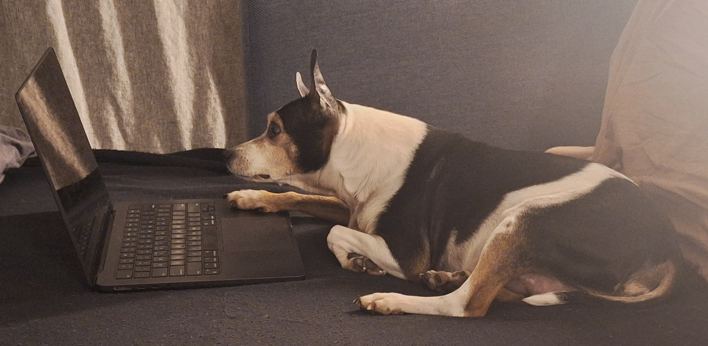

Founder, CEO, & Senior Researcher
Genna is the principal researcher at Glendeven, with expertise in using qualitative and mixed methods to study health information technology use and regulation of EHR developers, primary care, public health informatics, and health system transformation and consolidation. Genna's PhD in Health Services Organization and Policy is from the University of Michigan School of Public Health (2016), and she previously worked at Mathematica and its former subsidiary the Center for Studying Health System Change.
CTO & Consulting Researcher | nateapathy.com
Nate's primary position is as an Assistant Professor of Health Policy & Management at the University of Maryland School of Public Health. He consults on research and technical advisory projects. Nate is a leading expert in using EHR audit log data for health services research, clinical informatics evaluations, and health economics. His PhD in Health Policy & Management is from the Indiana University Fairbanks School of Public Health (2020), with a postdoctoral fellowship at the University of Pennsylvania Perelman School of Medicine & Leonard Davis Institute of Health Economics. He previously worked at Medstar Health Research Institute and Cerner.
Named after a B&B in Mendocino, Glendeven Research developed organically in 2026 to support projects that needed a partner to accelerate work on tight deadlines. Both Genna and Nate are motivated to use their expertise to understand complex issues in health policy and practice; by contracting with Glendeven, you'll have access to their shared perspective, network, and pop-culture references.
Glendeven is happy to run standalone projects or join larger teams as task leads or partners. Early work includes advising the Office of the National Coordinator for Health IT (ONC) how to refine surveys on the Technical Exchange Framework and Common Agreement (TEFCA), helping to design and implement the qualitative arm of a study on the effects of EHR optimization interventions in primary care, and supporting a team at University of Minnesota and the University of California San Francisco (UCSF) studying the implementation, scale-up, and impact of age-friendly health systems.
We're excited to explore opportunities to collaborate! Please email genna@glendevenresearch.com to discuss next steps or request additional photos of Glendeven's supervising canine, Bruce.
